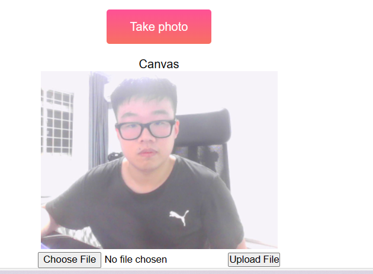
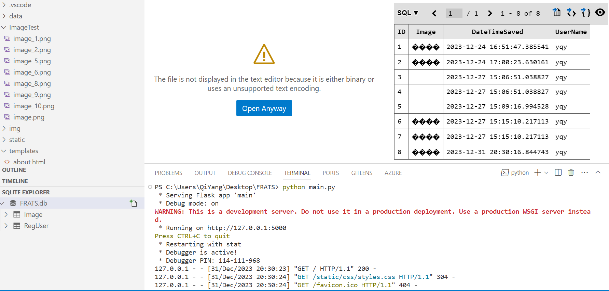

| week - 1 | week - 2 | week - 3 | week - 4 | week - 5 | week - 12 | week - 13 | week - 14 | week - 15 | week - 16 | |
During the hoildays till week 12 I have continue for the edit that I want to do.
First of all I have change some html to correct the FRATS website, now only the login user
can use the website feature. Secondly when user upload their img they do not need to key in
their name. For now when user login their name will be save in session and when they upload
their name and img will upload to the database at the same time.

I also edit the database and put 2 table in FRATS.db instead of put each table in seperate
db, as this ensures that we can easier reference the data between 2 tables. I have make
small changes for both table. 1 table for user info and another table for img.
Lastly, during the previous verison the img only save in local folder or save in database
in binary. but now I have edit the code so that It can upload and save in local folder and
database at the same time. helpful this can make the OpenCV part easier.
